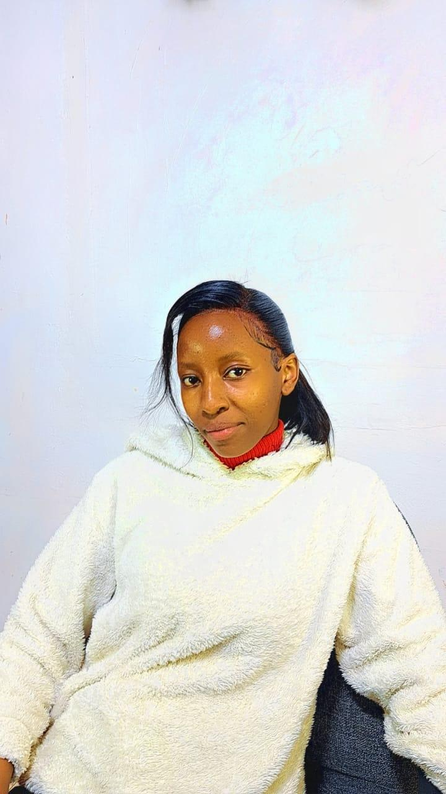
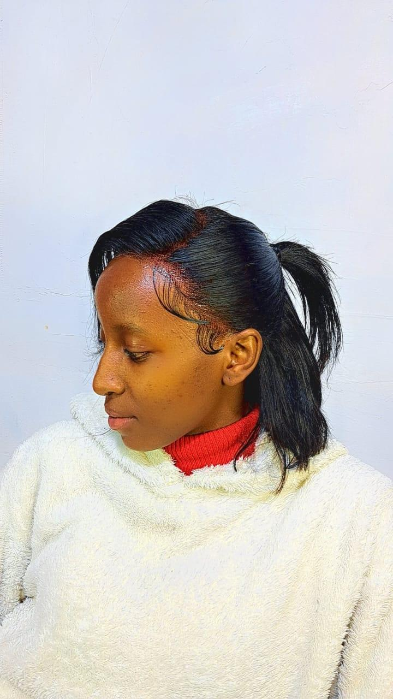

Winfred Mercy Wambui
About Me
Hello! My name is Winfred Mercy Wambui, and I live in Kenya. I am studying web development and love exploring technology, security, and design. This page is my starting point for WDD 131 – Dynamic Web Fundamentals.
My Hobbies


Some of my hobbies include reading, coding, hiking, and cooking. I enjoy learning new skills, exploring creative projects, and spending time outdoors.
Future Goals & Projects

Looking ahead, I aim to build professional-level web applications, deepen my cybersecurity expertise, and contribute to projects that make a positive impact in my community. I am excited to keep growing as a developer and security specialist.